This is a report for Homework 2 of CS 284. Here, we explore two ideas key to 3D graphics and design: Bézier surfaces for realistic smooth curves and triangle mesh representations for 3D geometries. Combining these tools with lighting models creates realistic virtual renderings and the ability to manipulate them.
It was surprising to us how simple the algorithms are in practice and how it is possible to traverse the elements of the mesh in any order when doing global mesh editing operations. We frequently interact with complex meshes in our own research in computational engineering, so it was interesting to finally see under the hood of a mesh's data structure.
De Casteljau's Algorithm is a recursive algorithm used to evaluate a Bézier curve at the point corresponding to parameter \(t\) from its control points. It works by recursively splitting the sides of the curve's control polygon by the ratio given by \(t\), then connecting these split points to form a lower-order control polygon until arriving at a single point.
We implemented this by writing the function evaluateStep, which takes a vector of 2-D control points as input and returns the control points for the following level of de Casteljau subdivision.
It works by pushing the lerp of the points \(p_i\) and \(p_{i+1}\) for \(i = 1,2,...,n-1\) onto the vector returned by the function.
This function is called recursively within render() and drawCurve() to draw the loaded Bézier curve to the GUI.
|
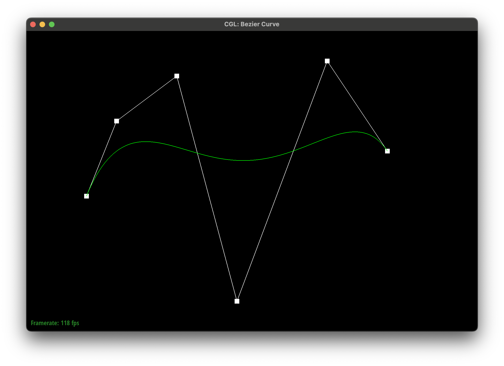
|
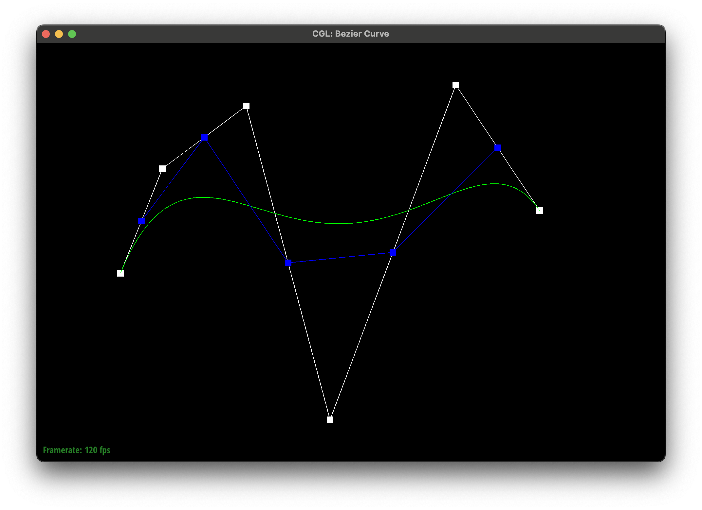
|
|
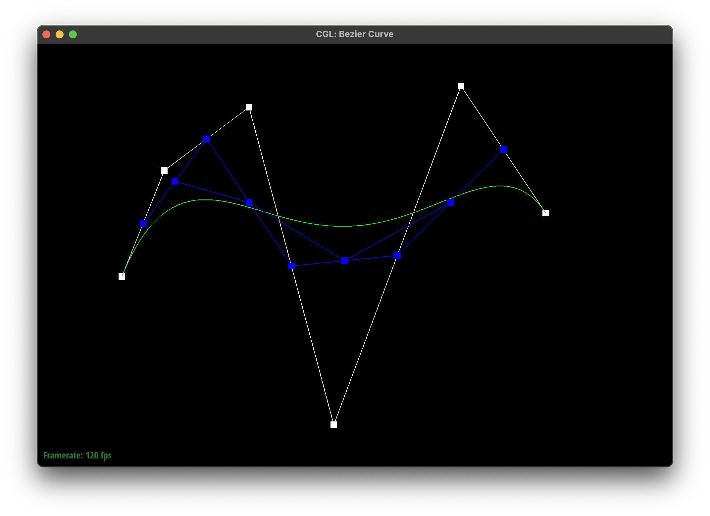
|
|
|
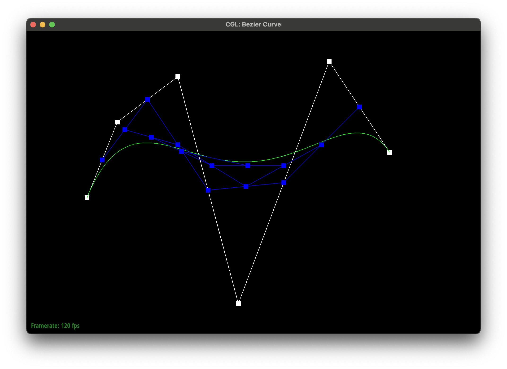
|
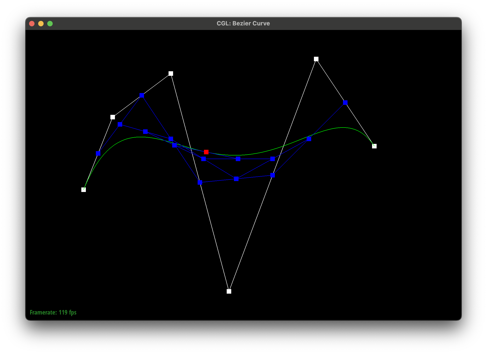
|
The De Casteljau algorithm extends to Bézier surfaces by evaluating an n-by-n grid of control points in two dimensions at the parameters \(u,v\) to form a 2-D surface in 3-D space. Each row of the matrix of control points is evaluated at the parameter \(u\) using the 1D de Casteljau subdivision, resulting in \(n\) three-dimensional points. These are used as the control points for a final 1D de Casteljau subdivision evaluated at the parameter \(v\), resulting in a single three dimensional point lying on the surface.
To implement this, we completed the function evaluate1D() which works similarly to evaluateStep() except that it returns the full evaluation of the Bézier curve at the parameter \(t\) as a 3D point.
This works by recursively calling evaluateStep until a single point is returned. The primary function evaluate() evaluates a Bézier surface at the parameters \(u,v\).
It works by evaluating the rows of the control point matrix at the parameter \(u\) using evaluate1D, pushing these onto a vector of points std::vector, then returning the output of evaluate1D with upts as the input control points and \(v\) as the parameter to evaluate at.
The edge flip algorithm works by first collecting all of the needed iterators, then performing reassignment as necessary to make the flip. Here, following convention from continuum mechanics (we are mechanical engineers), we call the untransformed state the "current configuration" and the transformed state the "reference configuration".
As shown below, each vertex is named A-D and the two faces are named F and f. Each half edge is named after its corresponding face in the reference configuration followed by 1-3 (for example, one half edge is named f2). The structure is traversed along the half edges using \(next()\) and \(twin()\) to collect all of the iterators.
Reassignment is fairly straightforward. Each object simply needs to point to its new correspondences in the current configuration. For an edge flip, most pointers are already correct so we only reassign where necessary.
Careful planning and a good naming convention meant that the code worked on the first build. We tested it by flipping many edges in the same area on both the teapot and cube test files. It will sometimes create a degenerate case where the structure was completely flattened (as expected), but it never caused an error or made holes in the mesh. We show one of our tests on the teapot mesh below.
The edge split algorithm also works by first collecting all of the needed iterators, then performing reassignment as necessary to make the flip. Again, following convention from continuum mechanics, we call the untransformed state the "current configuration" and the transformed state the "reference configuration".
As shown in the figure below, each vertex is named A-D and the two faces are named w-x. Each half edge is named after its corresponding face in the current configuration followed by 1-3 (for example, one half edge is named x2). Edges are named after their corresponding faces, so we have an edge named Ewx for example.
The structure is traversed along the half edges using next() and twin() in the current configuration to collect all of the preexisting iterators. All but two of the named half edges in the reference configuration are the same as in the current configuration.
For the two that are not, they are reassigned after collection to their new name in the current config. New objects are also created, all named for the current config.
The reassignment code is longer for splits than flips but no more complex. Each object simply needs to point to its new correspondences in the current configuration.
Careful planning and a good naming convention meant that the code worked on the first build. We tested it by splitting and flipping many edges in the same area on the teapot mesh. It never caused an error or made holes in the mesh. Below we show one of our split tests on the teapot mesh and another test which includes a combination of flips and splits.
isNew flag to false since they are from the original mesh. e->newPosition. We also created a new flag isOrig which we set equal to true for these unmodified edges. isOrig which will return false for an edge that has been split or was generated by a split. Looping through all edges, we first store an iterator to the subsequent edge, split the edge if isOrig == true, flag the returned vertex v->isNew, and update the isNew and isOrig flags accordingly for the four subdivision edges. isNew is set to false for the two segments of the original edge and true for the newly generated edges, which cut across the subdivided triangle. Also, copy e->newPosition into the newly created vertex, so that we can easily access it when assigning vertex positions. e->isNew, grab its vertices v1 and v2, and flip the edge if v1->isNew != v2->isNew. This is the logical equivalent to XOR, which will return false if both vertices are old or are new. v->newPosition which we assigned in steps 1 and 3. Implementing loop subdivision was not as painless of a process as implementing edge flipping or splitting.
One of the first issues we encountered was endless recursion during the edge splitting step.
One thought was that saving the last edge iterator of the original mesh (e.g. EdgeIter e_end = mesh.edgesEnd())
would allow us to iterate through the original edges and stop before iterating through new edges.
However, new edges are not appended in order, so this approach did not work.
There was no obvious solution with the class variables provided, so we decided to include a new flag variable isOrig
to flag edges that were split or produced by a split, which allowed us to divide the original edges without infinite recursion.
We then visually analyzed the mesh by running the code through steps 3 and 4:
|
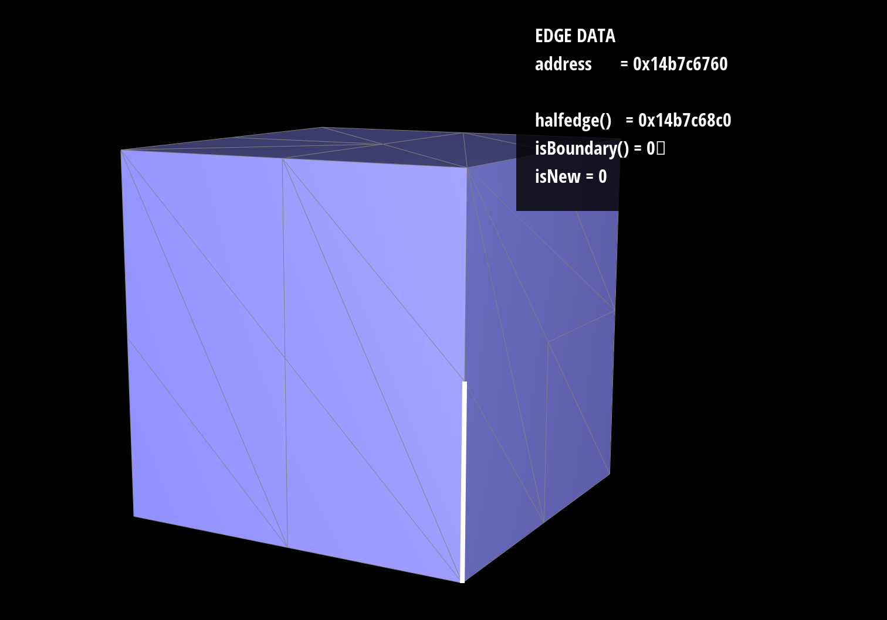
|
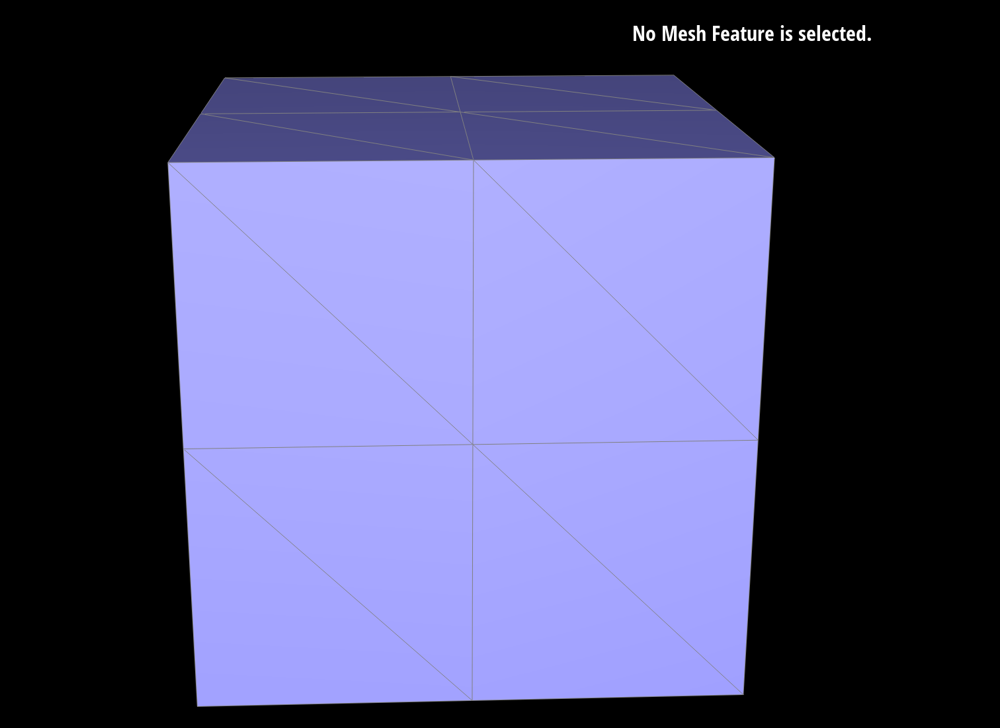
|
After visually verifying the mesh, we ran the full function including the vertex updates. The result was incorrect as it appeared that many vertices were erroneously moved to position \( \{0,0,0\} \):
In step 5, we were initially trying to access the new positions of split vertices from the split edges
(i.e. from e\_split->newPosition) but there was no reliable way to find the edge which stored newPosition
since the split vertex's halfedge changes after the flip in step 4. So v->halfedge()->edge()->newPosition
in most cases would return \( \{0,0,0\} \) because the vertex's halfedge would often change to one associated with a new edge, which had no newPosition data.
We added the edges' newPosition to the debugging GUI to determine if there was a pattern to accessing the proper edge from the changed vertex halfedge.
With no obvious solution to access the updated positions this way, we tried assigning both segments of the original split edge newPosition and then for each new vertex in step 5,
visit all of its edges until you find one that is old (i.e. e->isNew = false) and then pulling the newPosition from here.
This worked but didn't feel right. This was less efficient than the (in hindsight) obvious solution to store the newPosition in the split vertex's v->newPosition immediately following the split operation.
This both simplified and sped up our implementation of loop subdivision.
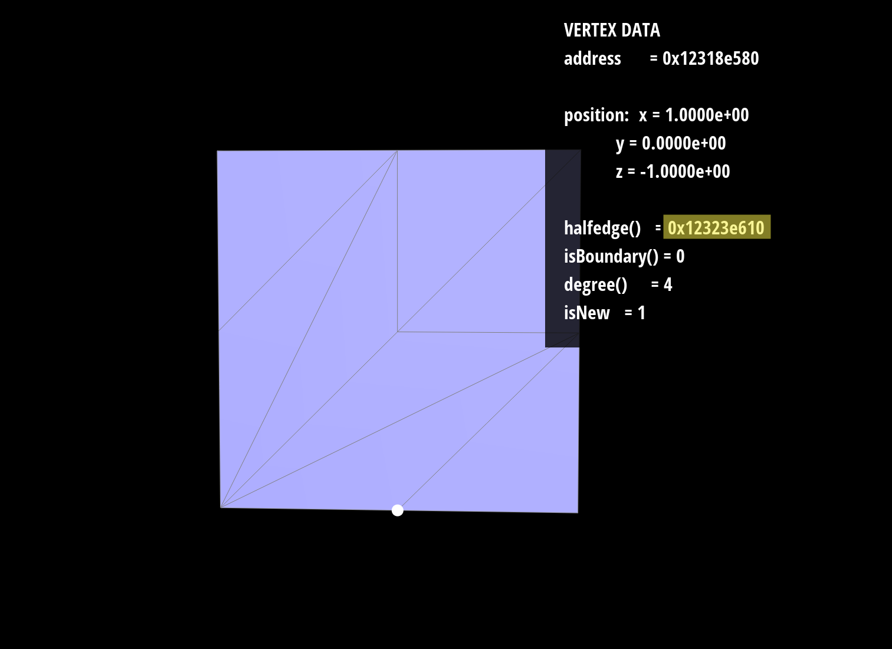
v->halfedge() = 0x12323e610 |
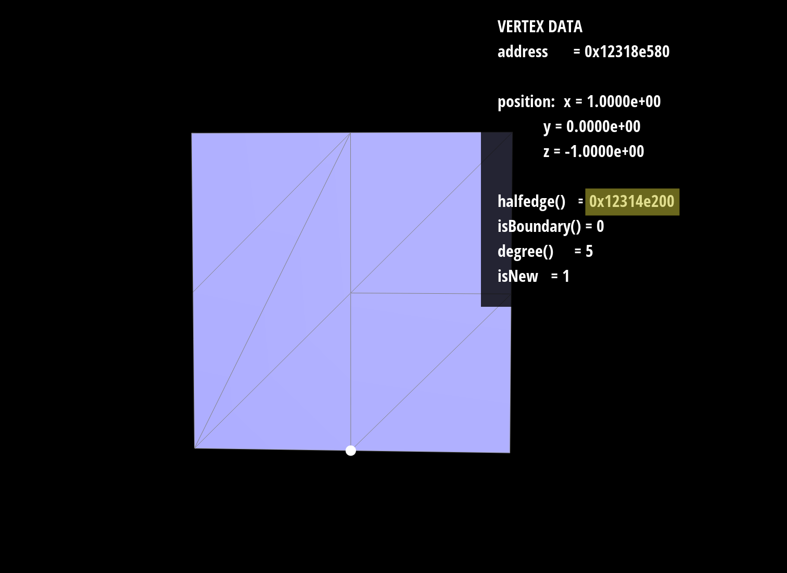
v->halfedge() = 0x12314e200 |
The predominant effect of loop subdivision is the smoothing of sharp edges, which are visible in coarsely tessellated geometry. Both intentional edges and corners (such as the corners of a cube) and unintentional edges (due to the coarse sampling of a smooth surface) are smoothed by loop subdivision. For geometry with primarily smooth features, like the teapot, loop subdivision creates a visually appealing and realistic geometry:
|
|
|
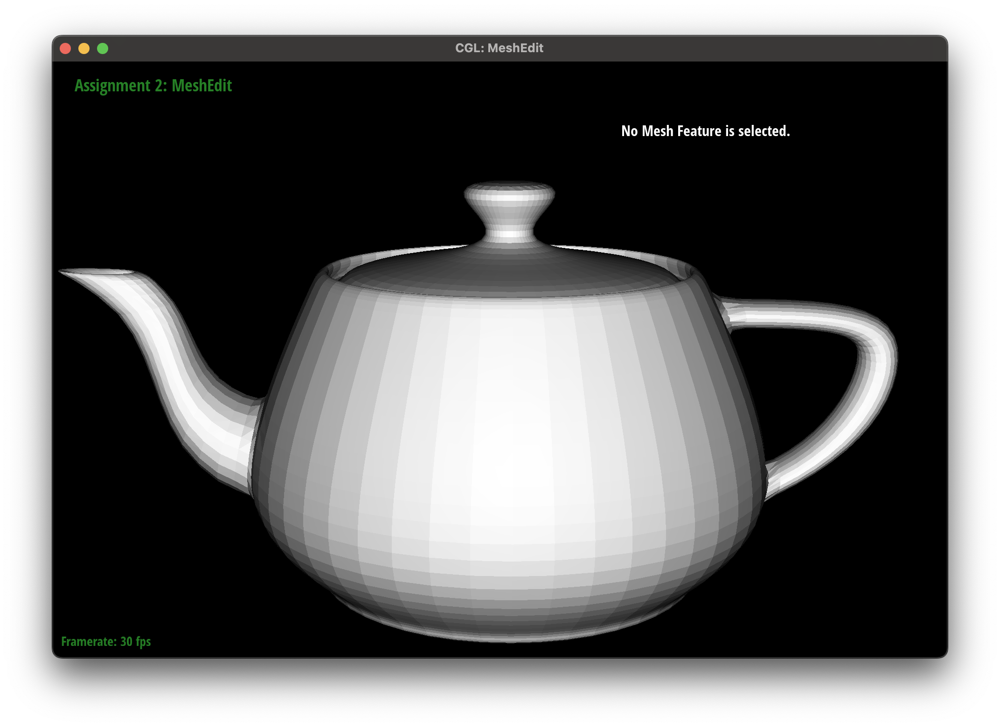
|
|
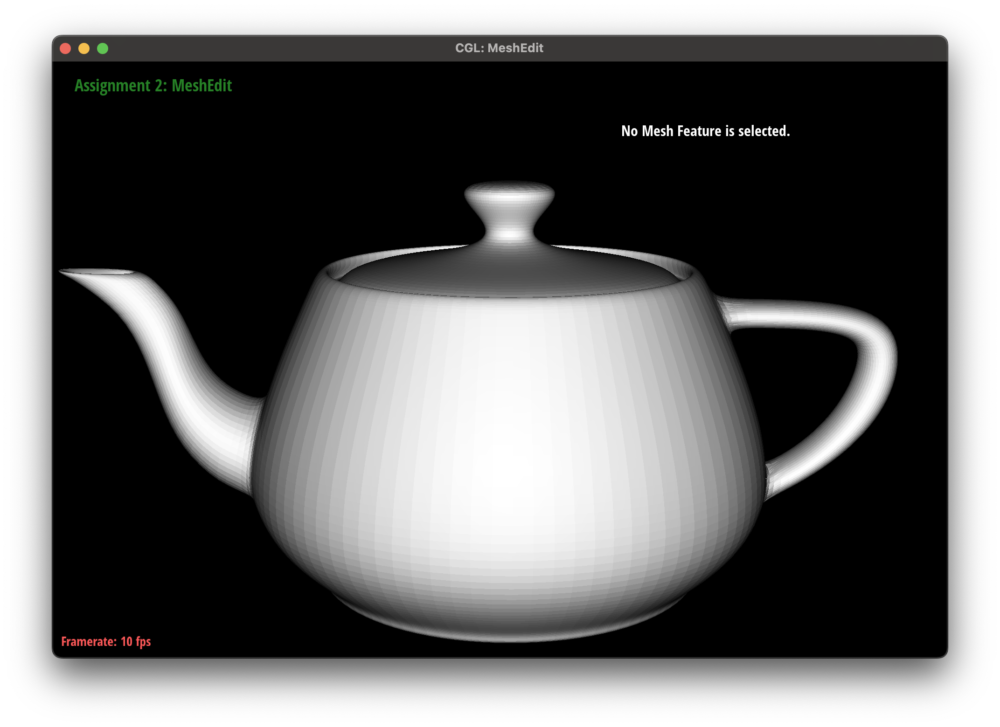
|
Suppose that we intend to model the sharp crease in the knob on the teapot lid and it should be visible in our loop subdivided geometry. Without modification to the input mesh, this crease will disappear after two levels of subdivision. If we split the edges near this crease before subdividing, we can mitigate the effects of excessive smoothing:
|
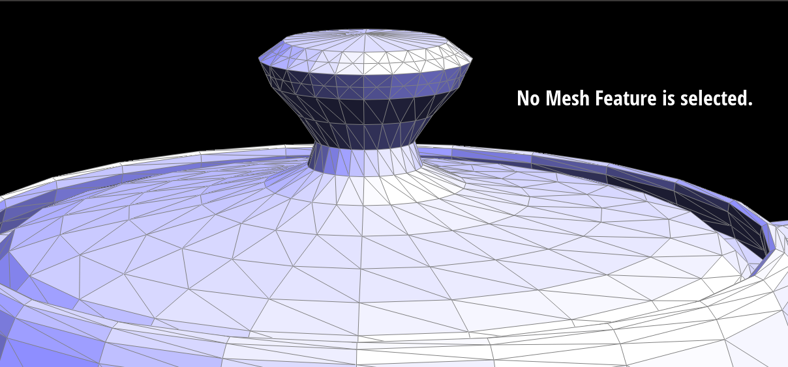
|
|
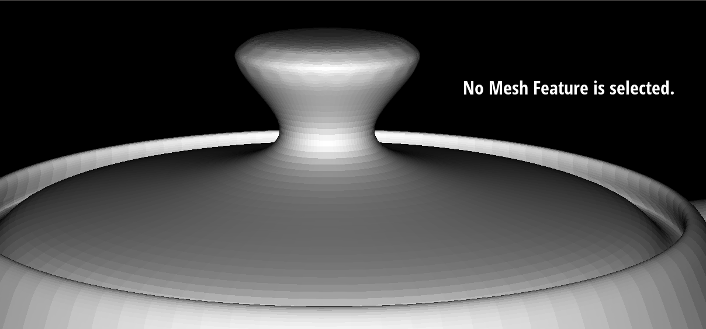
|
We can visualize this by splitting the edges on the top half of the cube while not modifying the edges on the bottom half. Pre-splitting near the edges results in smaller radii. Our intuition is that splitting near these edges creates more extraordinary points, resulting in less smooth geometry in these regions of the mesh.
|
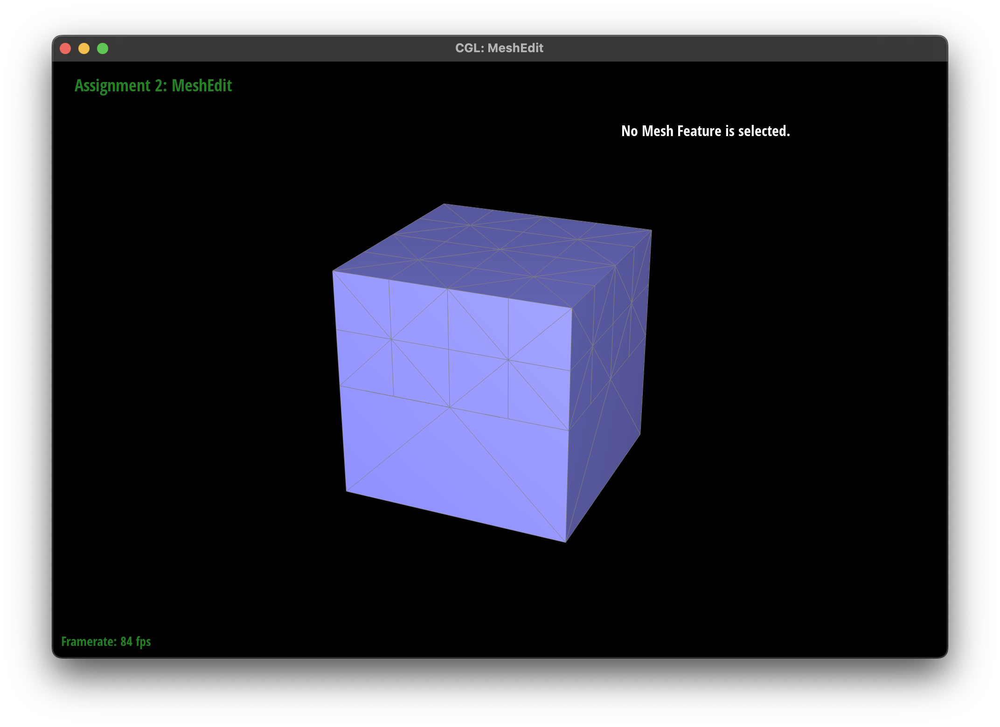
|
|
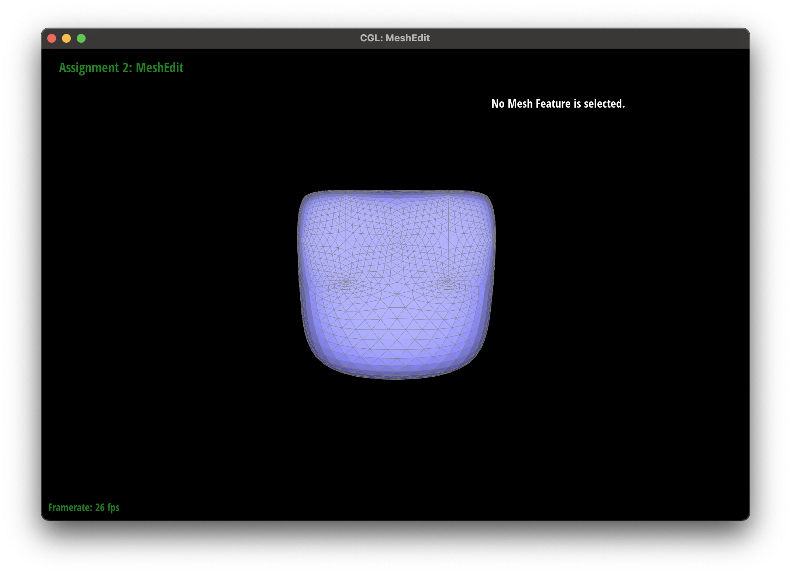
|
When performing loop subdivision on a cube, it tends to round sharp edges and shears the geometry into an asymmetrical shape. This is because the input mesh is not symmetrical, it is almost possible to see the diagonal edges on the faces even after three levels of subdivision. The limit surface will not be symmetrical if the input mesh is not symmetrical.
|
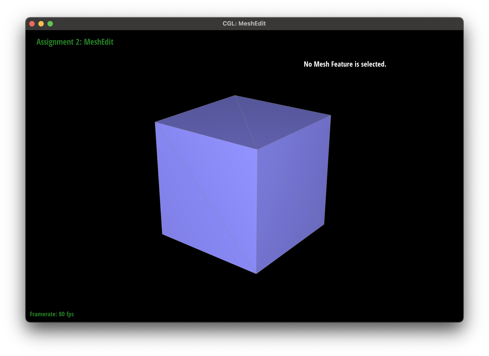
|
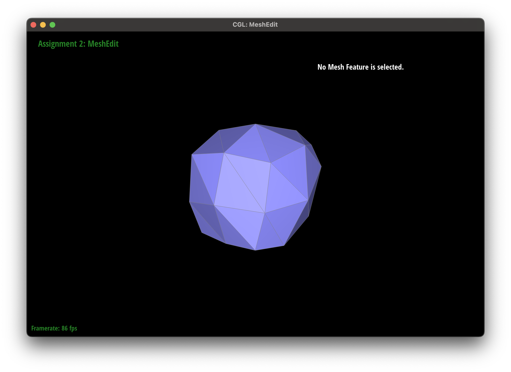
|
|
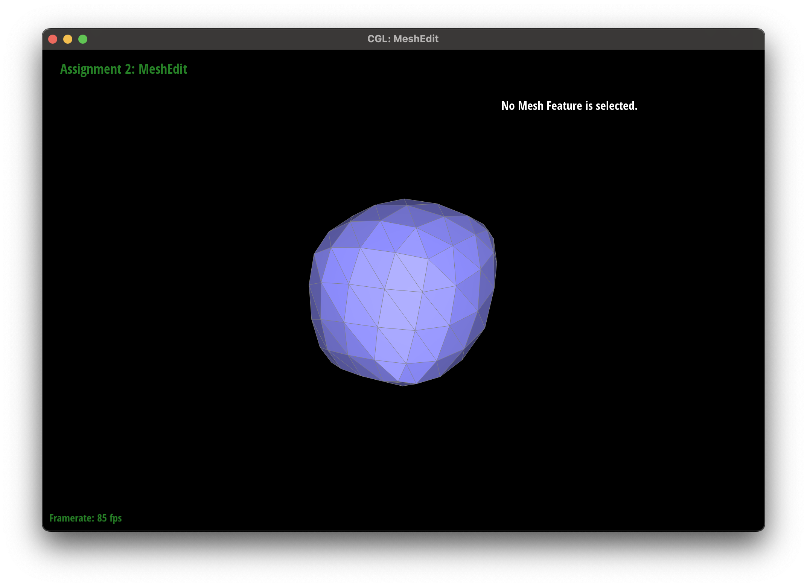
|
|
If we pre-process the cube mesh by splitting the diagonals across each face and then flipping to get a symmetrical pattern on each face, the resulting geometry from loop subdivision is symmetrical. This is because a symmetric input mesh will result in a symmetric limit surface.
|
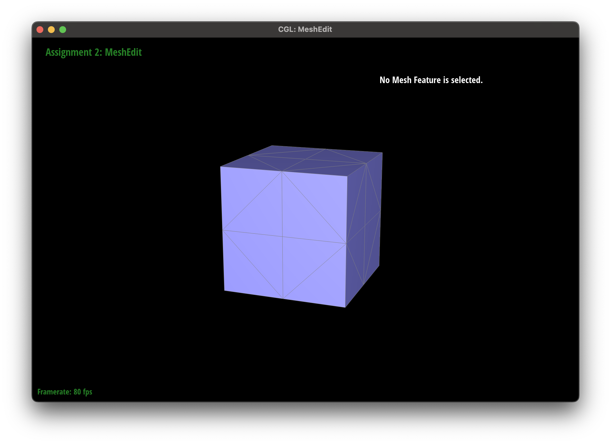
|
|
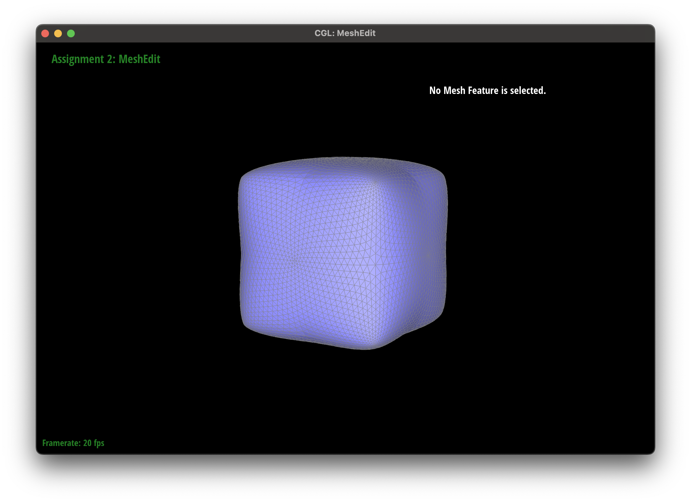
|